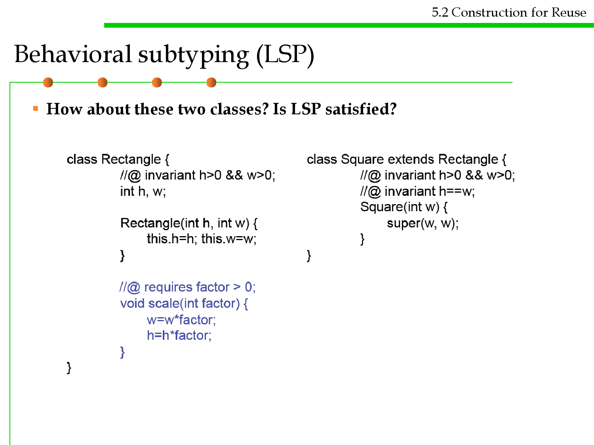
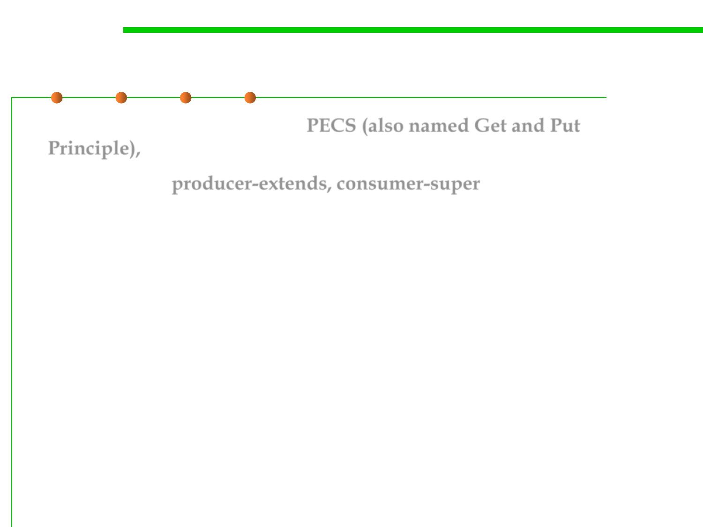
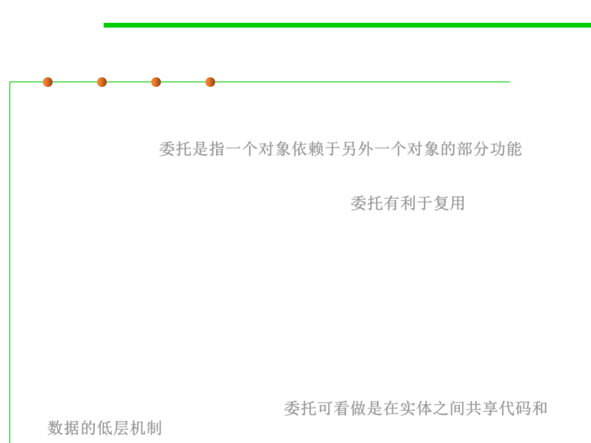
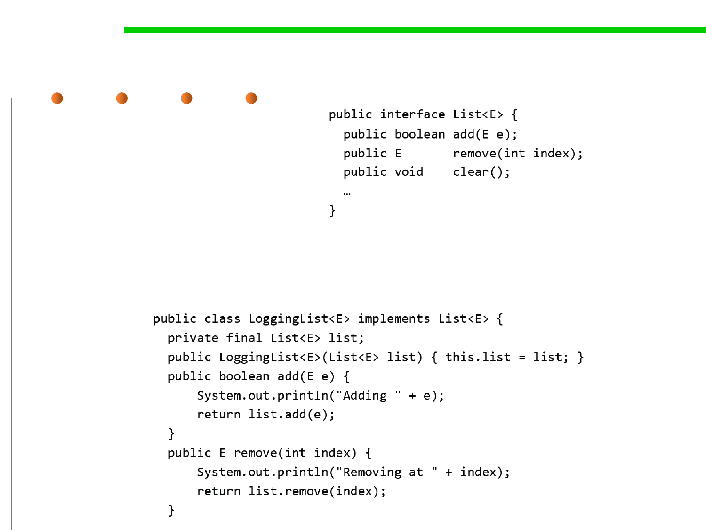
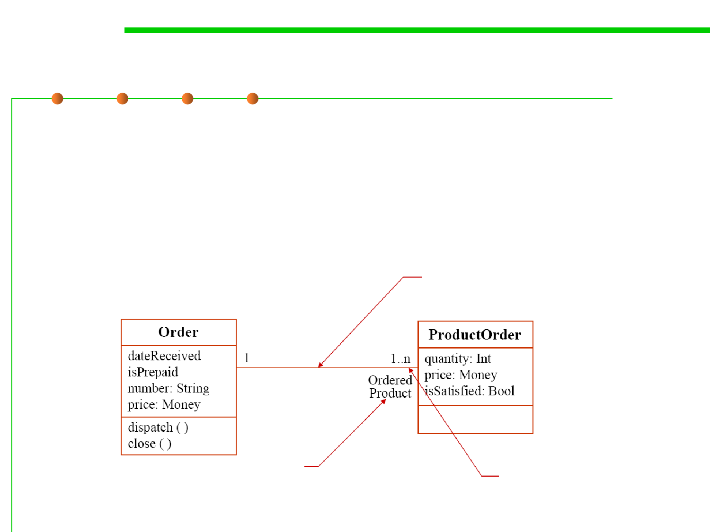
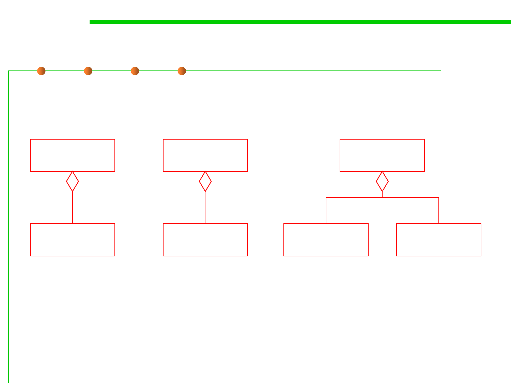
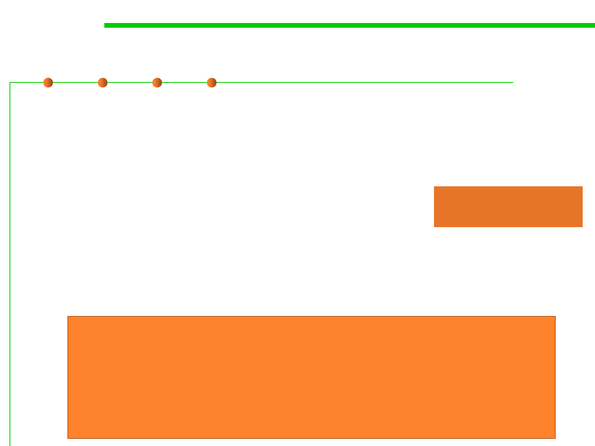
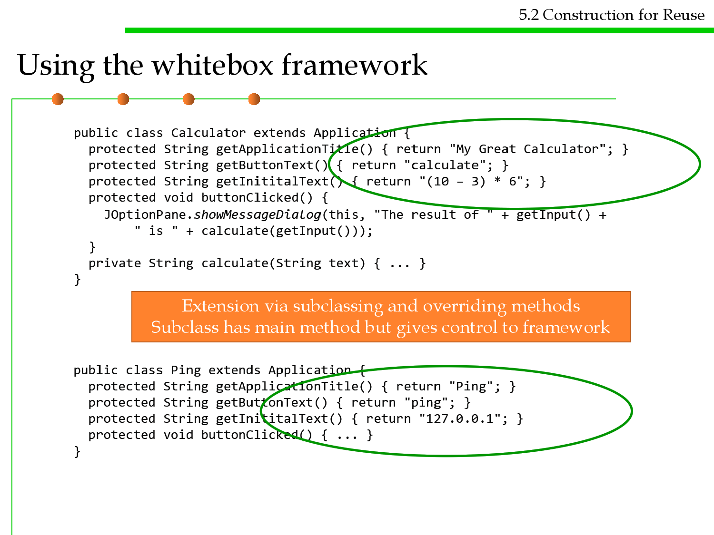
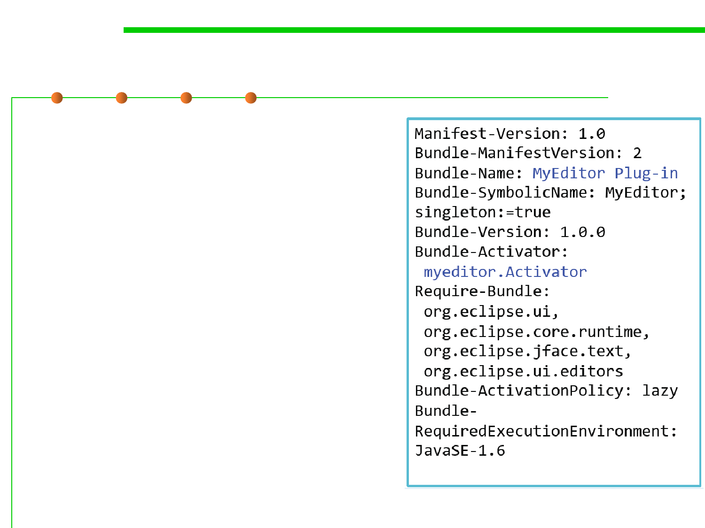

微信公众号[深容Pubmed文献检索] 1. 此处右键：选菜单【翻成中文（简体）】 2. 翻译后，此处右键：选菜单【打印...】成PDF格式
建议屏幕分辨率：1920X1080；如果屏幕太小，可以按Ctrl + 或 Ctrl -缩放网页。

Software Construction
Chapter 5: Reusability-Oriented Software
Construction Approaches
5.2 Construction for Reuse
Xu Hanchuan
xhc@hit.edu.cn
April 7, 2019

Outline
5.2 Construction for Reuse
▪ Designing reusable classes
– Inheritance and overriding
– Behavioral subtyping and overloading
– Parametric polymorphism and generic programming
– Composition and delegation
▪ Designing system-level reusable libraries and frameworks
– API and Library
– Framework
– Java Collections Framework (an example)

Software Construction
1 Designing reusable classes

Software Construction
(1) Inheritance and overriding
see 3.4

Software Construction
(2) Polymorphism, subtyping and
overloading

Software Construction
(a) Three Types of Polymorphism
5.2 Construction for Reuse
Three Types of Polymorphism (多态)
▪ Polymorphism is the provision of a single interface to entities of
different types or the use of a single symbol to represent multiple
different types 多态性是指为不同类型的实体提供一个接口，或者使
用一个符号来表示多个不同的类型。
– Ad hoc polymorphism: when a function denotes different and potentially
heterogeneous(异构的) implementations depending on a limited range of
individually specified types and combinations. Ad hoc polymorphism is
supported in many languages using function overloading. 一个函数可以
有多个同名的实现(方法重载)
– Parametric polymorphism 参数多态性: when code is written without
mention of any specific type and thus can be used transparently with any
number of new types. In the object-oriented programming community,
this is often known as generics or generic programming. 一个类型名字可
以代表多个类型(泛型编程)
– Subtyping (also called subtype polymorphism or inclusion
polymorphism): when a name denotes instances of many different classes
related by some common superclass 一个变量名字可以代表多个类的实例(
子类型)

Software Construction
(b) Ad hoc polymorphism and
Overloading see 3.4

Software Construction
(c) Parametric polymorphism and
generic programming see3.4

Software Construction
(d) Subtyping Polymorphism
see 3.4

Software Construction
(e) Behavioral subtyping and Liskov
Substitution Principle (LSP)

Behavioral subtyping
5.2 Construction for Reuse
▪ Let q(x) be a property provable about objects x of type T. Then q(y)
should be provable for objects y of type S where S is a subtype of T.
——Barbara Liskov
▪ Compiler-enforced rules in Java:
– Subtypes can add, but not remove methods
– Concrete class must implement all undefined methods
– Overriding method must return same type or subtype
– Overriding method must accept the same parameter types
– Overriding method may not throw additional exceptions
▪ Also applies to specified behavior:
Liskov
Substitution
– Same or stronger invariants
Principle
– Same or stronger postconditions for all methods
(LSP)
– Same or weaker preconditions for all methods
Behavioral subtyping (LSP)
5.2 Construction for Reuse
▪ Subclass fulfills the same invariants (and additional ones)
▪ Overridden method has the same pre and postconditions
Behavioral subtyping (LSP)
5.2 Construction for Reuse
▪ Subclass fulfills the same invariants (and additional ones)
▪ Overridden method start has weaker precondition
▪ Overridden method brake has stronger postcondition
Behavioral subtyping (LSP)
5.2 Construction for Reuse
▪ How about these two classes? Is LSP satisfied?

Behavioral subtyping (LSP)
5.2 Construction for Reuse
▪ How about these two classes? Is LSP satisfied?
Behavioral subtyping (LSP)
5.2 Construction for Reuse
▪ How about these two classes? Is LSP satisfied?
Invalidates stronger invariant
(w==h) in subclass

Variance
5.2 Construction for Reuse
▪ Variance refers to how subtyping between more complex types relates
to subtyping between their components. 型变是指当子类型关系出现在更加
复杂类型中时，如何处理新类型中的子类型关系
– E.g., Cat extends Animal, the type Cat is a subtype of Animal.
– How should List<Cat> relate to List<Animal>?
– Or how should a function returning Cat relate to a function
returning Animal?
▪ Three types of variance
– Covariant(协变): Subtyping is preserved. If List<Cat> is a subtype of
List<Animal>. 保持子类型关系
– Contravariant(逆变): Subtyping is reversed. If List<Animal> is a subtype of
List<Cat>. 反转了子类型关系
– Invariant(不变): Neither List<Cat> nor List<Animal> is a subtype of the
other. 没有子类型关系
Variance
5.2 Construction for Reuse
▪ Three types of variance
– Covariant(协变): Subtyping is preserved. If List<Cat> is a subtype of
List<Animal>. 保持子类型关系
– Contravariant(逆变): Subtyping is reversed. If List<Animal> is a subtype of
List<Cat>. 反转了子类型关系
– Invariant(不变): Neither List<Cat> nor List<Animal> is a subtype of the
other. 没有子类型关系
Invariant
Covariant
Contravariant
Animal
List<Animal>
List<Animal>
List<Animal>
Cat
List<Cat>
List<Cat>
List<Cat>

Variance in method overriding
5.2 Construction for Reuse
Subtyping of the
argument/return
type of the
method.
Invariance. The
signature of the
overriding method
is unchanged.
Covariant return
type. The
subtyping relation
is in the same
direction as the
relation between
ClassA and
ClassB.
Contravariant
argument type.
The subtyping
relation is in the
opposite direction
to the relation
between ClassA
and ClassB.
Covariant
argument type.
Not type safe.
https://en.wikipedia.org/wiki/Covariance_and_contravariance_(computer_science)

Variance in method overriding
5.2 Construction for Reuse
▪ Covariant method return type
– In a language which allows covariant return types, a derived class can
override the getAnimalForAdoption method to return a more specific type
– Java(from 1.5) and C++ support covariant return types
class Animal{ }
class Cat extends Animal{}
public class AnimalShelter {
Animal getAnimalForAdoption() { // ...}
void putAnimal(Animal animal) { // ...}
}
class CatShelter extends AnimalShelter {
Cat getAnimalForAdoption() { return new Cat(); }
void putAnimal(Object animal) { // ...}
}
Variance in method overriding
5.2 Construction for Reuse
▪ Contravariant method argument type
– Similarly, it is type safe to allow an overriding method to accept a more
general argument than the method in the base class
– Not many object-oriented languages actually allow this. C++ and Java would
interpret this as an unrelated method with an overloaded name.
class Animal{ }
class Cat extends Animal{}
public class AnimalShelter {
Animal getAnimalForAdoption() { // ...}
void putAnimal(Animal animal) { // ...}
}
class CatShelter extends AnimalShelter {
Cat getAnimalForAdoption() { return new Cat(); }
void putAnimal(Object animal) { // ...}
}

Variance in generics
5.2 Construction for Reuse
▪ Generics are type invariant in Java Java中的泛型是不“型变”的
– ArrayList<Cat> is a subtype of List<Cat>
– List<Cat> is not a subtype of List<Animal>
▪ Wildcards(通配符)
– e.g. List<?> or List<? extends Animal> or List<? super Animal>
▪ Generic type info is erased in running-time(i.e. compile-time only)
– Cannot use instanceof to check generic type
▪ Covariant in generics:
– List<Cat> is a subtype of List<? extends Animal>
▪ Contravariant in generics:
– List<Animal> is a subtype of List<? super Cat>

Type Erasure
5.2 Construction for Reuse
▪ The virtual machine does not have objects of generic types—all
objects belong to ordinary classes. 虚拟机中没有泛型类型对象-所有对
象都属于普通类!
▪ Generic type info is erased in running-time(i.e. compile-time only) 泛
型信息只存在于编译阶段，在运行时会被”擦除”
– Whenever you define a generic type, a corresponding raw type is
automatically provided. The name of the raw type is simply the name of the
generic type, with the type parameters removed. 定义泛型类型时，会自动提
供一个对应的原始类型(非泛型类型)，原始类型的名字就是去掉类型参数后的
泛型类型名。
– The type variables are erased and replaced by their bounding types (or Object
for variables without bounds) 类型变量会被擦除，替换为限定类型，如果没
有限定类型则为Object类型。
5.2 Construction for Reuse
Type Erasure
public class Pair<T>
{
private T first;
private T second;
public Pair() { first = null; second = null; }
public Pair(T first, T second)
{ this.first = first; this.second = second; }
public T getFirst() { return first; }
public T getSecond() { return second; }
public void setFirst(T newValue) { first = newValue; }
public void setSecond(T newValue) { second = newValue; }
}
After erasure ( to Object)
public class Pair
{
private Object first;
private Object second;
public Pair(Object first, Object second)
{ this.first = first; this.second = second;}
public Object getFirst() { return first; }
public Object getSecond() { return second; }
public void setFirst(Object newValue) { first = newValue; }
public void setSecond(Object newValue) { second = newValue; }
}

Type Erasure
5.2 Construction for Reuse
public class Interval<T extends Comparable & Serializable> implements Serializable
{
private T lower;
private T upper;
...
public Interval(T first, T second)
{
if (first.compareTo(second) <= 0) { lower = first; upper = second; }
else { lower = second; upper = first; } //此处因为限定了T的具体类型，所以可以调
用类型相关的具体方法
}
}
After erasure (to bounding type)
public class Interval implements Serializable
{
private Comparable lower;
private Comparable upper;
...
public Interval(Comparable first, Comparable second) { . . . }
}

5.2 Construction for Reuse
Runtime Type Inquiry Only Works with Raw Types
▪ Runtime Type Inquiry Only Works with Raw Types 运行时类型查询
只适用于原始类型
if (a instanceof Pair<String>) // Error
if (a instanceof Pair<T>) // Error
Pair<String> stringPair = . . .;
Pair<Employee> employeePair = . . .;
if (stringPair.getClass() == employeePair.getClass())
{}// they are equal

Subtype in generics
5.2 Construction for Reuse
▪ Generics are type invariant in Java Java中的泛型是不“型变”的
– ArrayList<Cat> is a subtype of List<Cat>
– List<Cat> is not a subtype of List<Animal>
▪ E.g., Manager is subtype of Employee, but Pair<Manager> is not a
subtype of Pair<Employee>
Pair<Manager> managerBuddies = new Pair<>(ceo, cfo);
// illegal, but suppose it wasn't
Pair<Employee> employeeBuddies = managerBuddies;
// legal
employeeBuddies.setFirst(lowlyEmployee);
– But employeeBuddies and managerBuddies refer to the same object. We now
managed to pair up the cfo with a lowly employee, which should not be
possible for a Pair<Manager>. employeeBuddies和managerBuddies现在指
向了同一个对象，可以将cfo同普通员工分为一组，会出现错误（如工资等级设
置等)，因此第二行代码是不允许的。
Subtype in generics
5.2 Construction for Reuse

Variance in generics
5.2 Construction for Reuse
▪ Covariant in generics:
– List<Cat> is a subtype of List<? extends Animal>
List<Cat> objs = new ArrayList<>();
objs.add(new Cat());
objs.add(new WhiteCat());
List<? extends Animal> animals = objs;
animals.add(new Cat()); //compile error
animals.add(new Animal()); //compile error
animals.add(new Object()); //compile error
animals.add(null);
//succeed, but it is meaningless.
Animal animal = animals.get(0); //succeed！
– 对于类型 List<? extends Animal>,调用一个返回Animal类型(或子类型)的方法(如
：T get(int pos))是安全的, 因为compiler知道这个List中的任何对象至少具有
Animal类型(或子类型),可以完成类型转换。
– 但调用类似add(E e)的方法则不安全,类型擦除机制会导致运行时可以往animals中储存
各种类型的对象。
– 因此,Java此时禁止了List中所有具有泛型输入参数的方法,如:add(T item)
Variance in generics
5.2 Construction for Reuse
▪ Contravariant in generics:
– List<Animal> is a subtype of List<? super Cat>
List<? super Cat> animals = new ArrayList<Animal>();
animals.add(new Cat());
animals.add(new WhiteCat ());
animals.add(new Animal()); //compile error
animals.add(new Object()); //compile error
Animal animal = animals.get(0); //compile error
Object o = animals.get(1); //succeed, but it is meaningless.
– 对于List中的 T get(int pos)方法，当指定类型是“? super Cat”时, get方法的返回
类型就变成了“? super Cat”, 即返回类型可能是Cat或者Cat的基类型，compiler无法
确定具体类型，因此拒绝调用任何返回类型为T的方法(除非是读取为Object类)
– 但调用类似add(E e)的方法则安全, 传入Cat及其子类(WhiteCat)是安全的, 因为compiler
知道这个List包含的是Cat或Cat的基类对象。
– 因此,Java此时禁止了List中所有具有泛型返回类型的方法,如:get()

PECS
5.2 Construction for Reuse
▪ Here is a mnemonic(记忆术), PECS (also named Get and Put
Principle), to help remember which wildcard type to use:
producer-extends, consumer-super
▪ The lesson is clear. For maximum flexibility, use wildcard types on
input parameters that represent producers or consumers.
– If a parameterized type represents a T producer, use<? extends T>, e.g., get()
– If a parameterized type represents a T consumer, use<? super T>, e.g., add()

Variance in generics
5.2 Construction for Reuse
▪ Wildcard subtyping in Java can be visualized as a cube

Software Construction
(3) Delegation and Composition
A Sorting example
▪ Version A:
▪ Version B:
5.2 Construction for Reuse
Lambda Expressions

Delegation 委托
5.2 Construction for Reuse
▪ Delegation is simply when one object relies on another object for
some subset of its functionality (one entity passing something to
another entity) 委托是指一个对象依赖于另外一个对象的部分功能
– e.g. here, the Sorter is delegating functionality to some Comparator
▪ Judicious delegation enables code reuse 委托有利于复用
– Sorter can be reused with arbitrary sort orders
– Comparators can be reused with arbitrary client code that needs to
compare integers
▪ Explicit delegation: passing the sending object to the receiving object
▪ Implicit delegation: by the member lookup rules of the language
▪ Delegation can be described as a low level mechanism for sharing
code and data between entities. 委托可看做是在实体之间共享代码和
数据的低层机制
A simple Delegation example
5.2 Construction for Reuse
A simple Delegation example
5.2 Construction for Reuse
Switch to
another
forwarder
Delegation
5.2 Construction for Reuse
▪ The delegation pattern is a software design pattern for
implementing delegation, though this term is also used loosely for
consultation or forwarding.(也称为转发)
▪ Delegation is dependent upon dynamic binding, as it requires that
a given method call can invoke different segments of code at
runtime.
▪ Process
– The Receiver object delegates operations to the Delegate object
– The Receiver object makes sure, that the Client does not misuse the
Delegate object.
Client
calls Receiver delegates to Delegate

5.2 Construction for Reuse
Using delegation to extend functionality
▪ Consider java.util.List
▪ Suppose we want a list that logs its operations to the console…
– The LoggingList is composed of a List, and delegates (the non-logging)
functionality to that List.

Delegation vs. Inheritance
5.2 Construction for Reuse
▪ Inheritance: Extending a Base class by a new operation or
overwriting an operation.
▪ Delegation: Catching an operation and sending it to another object.
▪ Many design patterns use a combination of inheritance and
delegation.
List
+Add()
+Remove()
Stack
+Push()
+Pop()
+Top()
Stack
list:List
+Push()
+Pop()
+Top()
List
Remove()
Add()

Delegation vs. Inheritance
5.2 Construction for Reuse
public class A {
void foo() { this.bar(); }
void bar() { System.out.println("A.bar"); }
}
public class B extends A {
public B() {}
void foo() { super.foo(); }
void bar() { System.out.println("B.bar"); }
}
B b = new B();
b.foo();
▪ Calling b.foo() will result in what?

Delegation: association关联关系
5.2 Construction for Reuse
▪ Association: a persistent relationship between classes of objects
that allows one object instance to cause another to perform an
action on its behalf.
– This relationship is structural, because it specifies that objects of one kind
are connected to objects of another and does not represent behavior.
关联
角色名
多重性

Delegation: association
5.2 Construction for Reuse
class Course {}
Student
class Student {
private Course [ ] selectedCourses;
}
- selectedCourses
5..*
Course
class Teacher {
private Student [ ] students;
}
class Student {
Teacher
private Teacher teacher;
}
1
- students
- teacher
0..*
Student
Delegation: dependency 依赖关系
5.2 Construction for Reuse
▪ Dependency: a temporary relationship that an object requires other
objects (suppliers) for their implementation.
5.2 Construction for Reuse
Delegation: composition and aggregation 组合和聚合
▪ Composition is a way to combine simple objects or data types into
more complex ones.
– An object of a composite type (e.g. car) "has an" object of a simpler type
(e.g. wheel).
– Composition is implemented such that an object contains another object.
– A special composition: aggregation
▪ In composition, when the owning object is destroyed, so are the
contained objects. In aggregation, this is not necessarily true.
– A university owns various departments, and each department has a
number of professors. If the university closes, the departments will no
longer exist, but the professors in those departments will continue to exist.
– A University can be seen as a composition of departments, whereas
departments have an aggregation of professors. A Professor could
work in more than one department, but a department could not be part
of more than one university. 大学与院系间是组合，院系与教师间是聚合

5.2 Construction for Reuse
Delegation: composition and aggregation
Company
CourseClass
Sale
0..* -employees
Employee
15..* -students
Student
1 +customer
Customer
1..* +products
Product
A company owns zero or multiple employees;
A course’s class owns above 15 students;
An Sale owns a customer and a set of products;

5.2 Construction for Reuse
Delegation: composition and aggregation
class Student {}
class CourseClass {
…
private Student[] students;
public addStudent (Student s) {
studtents.append(s);
}
…
}
CourseClass
15..* -students
Student
Student a = new Student ();
Student b = new Student ();
Student n = new Student ();
CourseClass SE = new CourseClass();
SE.addStudent (a);
SE.addStudent (b);
SE.addStudent (n);
5.2 Construction for Reuse
Delegation: composition and aggregation
Person
1 -heart
Heart
Window
0..* +menus
Menu
A heart is part of a person;
A menu is part of a window;

5.2 Construction for Reuse
Delegation: composition and aggregation
class Heart {}
class Person {
…
private Heart heart = new Heart();
…
}
Person
1 -heart
Heart

5.2 Construction for Reuse
Five types of relations between objects
▪ Delegation
– Association
– Dependency
– Composition
– Aggregation
▪ Inheritance

小结：对象之间的联系
5.2 Construction for Reuse
▪ 继承/泛化inheritance：一般与特殊的关系——is a kind of
▪ 组合composition：部分与整体的关系，彼此不可分——is part of
▪ 聚合aggregation：部分与整体的关系，但彼此可分——owns a
▪ 关联association：对象之间的长期静态联系——has a
▪ 依赖dependence：对象之间的动态的、临时的通信联系——use a
▪ 类间联系的强度：继承>>> 组合>> 聚合>> 关联>>> 依赖

面向对象概念的一个综合例子
5.2 Construction for Reuse
摘自：http://www.nowamagic.net/architecture/architecture_PicsToIntroduceOOP.php


Software Construction
2 Designing system-level reusable
libraries and frameworks
Libraries
5.2 Construction for Reuse
▪ Library: A set of classes and methods (APIs) that provide reusable
functionality
Framework
5.2 Construction for Reuse
▪ Framework: Reusable skeleton code that can be customized into an
application
▪ Framework calls back into client code
– The Hollywood principle: “Don’t call us. We’ll call you.”
5.2 Construction for Reuse
General distinction: Library vs. framework

5.2 Construction for Reuse
Libraries and frameworks in practice
▪ Defines key abstractions and their interfaces 定义关键抽象和接口
▪ Defines object interactions & invariants 定义对象不变量和方法
▪ Defines flow of control 定义控制流
▪ Provides architectural guidance 提供构建的指导
▪ Provides defaults 提供缺省实现

More terms
5.2 Construction for Reuse
▪ API: Application Programming Interface, the interface of a library
or framework
▪ Client: The code that uses an API
▪ Plugin: Client code that customizes a framework
▪ Extension point: A place where a framework supports extension
with a plugin
▪ Protocol: The expected sequence of interactions between the API
and the client
▪ Callback: A plugin method that the framework will call to access
customized functionality
▪ Lifecycle method: A callback method that gets called in a sequence
according to the protocol and the state of the plugin


Software Construction
(1) API design
Why is API design important?
5.2 Construction for Reuse
▪ If you program, you are an API designer, and APIs can be among
your greatest assets
▪ Good code is modular – each module has an API
– Users invest heavily: acquiring, writing, learning
– Thinking in terms of APIs improves code quality
– Successful public APIs capture users
▪ Can also be among your greatest liabilities
– Bad API can cause unending stream of support calls
– Can inhibit ability to move forward
▪ Public APIs are forever – one chance to get it right 一旦发布，难以修
改
– Once module has users, can’t change API at will

Characteristics of a good API
▪ Easy to learn
▪ Easy to use, even without documentation
▪ Hard to misuse
▪ Easy to read and maintain code that uses it
▪ Sufficiently powerful to satisfy requirements
▪ Easy to evolve
▪ Appropriate to audience
5.2 Construction for Reuse

Sample early API draft
5.2 Construction for Reuse
// A collection of elements (root of the collection hierarchy)
public interface Collection<E> {
// Ensures that collection contains o
boolean add(E o);
// Removes an instance of o from collection, if present
boolean remove(Object o);
// Returns true iff collection contains o
boolean contains(Object o) ;
// Returns number of elements in collection
int size() ;
// Returns true if collection is empty
boolean isEmpty();
... // Remainder omitted
}

5.2 Construction for Reuse
(1) API should do one thing and do it well
▪ Functionality should be easy to explain 功能单一
– If it's hard to name, that's generally a bad sign
– Good names drive development 好的命名利于开发
– Be amenable to splitting and merging modules 适合分解和合并模块
▪ Good: Font, Set, PrivateKey, Lock, ThreadFactory,
TimeUnit, Future<T>
▪ Bad:
– DynAnyFactoryOperations
– _BindingIteratorImplBase
– ENCODING_CDR_ENCAPS
– OMGVMCID
5.2 Construction for Reuse
(2) API should be as small as possible but no smaller
▪ API should satisfy its requirements
▪ When in doubt leave it out
– Functionality, classes, methods, parameters, etc.
– You can always add, but you can never remove 可以增加功能，但不能移除
▪ Conceptual weight more important than bulk 追求概念上的”小”,而不
是体积上的”小”
▪ Look for a good power-to-weight ratio 在性能和大小之间找平衡

5.2 Construction for Reuse
(3) Implementation should not impact API
▪ Implementation details in APIs are harmful
– Confuse users
– Inhibit freedom to change implementation
▪ Be aware of what is an implementation detail
– Do not overspecify the behavior of methods
– For example: do not specify hash functions
– All tuning parameters are suspect
▪ Don't let implementation details “leak” into API
– Serialized forms, exceptions thrown
▪ Minimize accessibility of everything (information hiding)
– Make classes, members as private as possible
– Public classes should have no public fields

(4) Documentation matters
5.2 Construction for Reuse
▪ Document every class, interface, method, constructor, parameter,
and exception
– Class: what an instance represents
– Method: contract between method and its client
▪ Preconditions, postconditions, side-effects
– Parameter: indicate units, form, ownership
Recall Chapter 4 for
Understandability
▪ Document thread safety
▪ If class is mutable, document state space
Reuse is something that is far easier to say than to do. Doing it
requires both good design and very good documentation. Even
when we see good design, which is still infrequently, we won't
see the components reused without good documentation.
– D. L. Parnas
Software Aging, on ICSE 1994

5.2 Construction for Reuse
(5) Consider performance consequences
▪ Bad decisions can limit performance
– Making type mutable
– Providing constructor instead of static factory
– Using implementation type instead of interface
▪ Do not warp(扭曲) API to gain performance
– Underlying performance issue will get fixed, but headaches will be with
you forever
▪ Good design usually coincides with good performance
▪ Performance effects of a bad API decisions can be real and
permanent
– Component.getSize() returns Dimension, but Dimension is mutable,
thus each getSize call must allocate Dimension, causing millions of
needless object allocations (Dimension类封装了一个构件的高度和宽度)

5.2 Construction for Reuse
(6) API must coexist peacefully with platform
▪ Do what is customary
– Obey standard naming conventions
– Avoid obsolete parameter and return types
– Mimic patterns in core APIs and language
▪ Take advantage of API-friendly features
– Generics, varargs, enums, functional interfaces
▪ Know and avoid API traps and pitfalls
– Finalizers, public static final arrays, etc.
▪ Don’t transliterate(音译) APIs
(7) Class design
5.2 Construction for Reuse
▪ Minimize mutability: Classes should be immutable unless there’s a
good reason to do otherwise
– Advantages: simple, thread-safe, reusable
– Disadvantage: separate object for each value
– If mutable, keep state-space small, well-defined.
▪ Subclass only where it makes sense: Subclassing implies
substitutability (LSP)
– Don’t subclass unless an is-a relationship exists. Otherwise, use delegation
or composition. 尽量使用委托和组合
– Don’t subclass just to reuse implementation. 不要因为单纯的复用实现而
使用继承
– Inheritance violates encapsulation, and subclasses are sensitive to
implementation details of superclass 继承违反了封装原则

(8) Method design
5.2 Construction for Reuse
▪ Don't make the client do anything the module could do 模块能做到
的，客户端就不要做减少模板代码的使用
– Clients generally do via cut-and-paste, which is ugly, annoying, and error-
prone.
▪ APIs should fail fast: report errors as soon as possible. Compile
time is best – static typing, generics.
– At runtime, first bad method invocation is best
– Method should be failure-atomic(要么正常结束，产生期望结果；要么整体
失败，不产生任何的结果)
(8) Method design
5.2 Construction for Reuse
▪ Provide programmatic access to all data available in string form.
Otherwise, clients will parse strings, which is painful for clients 对所
有可访问数据提供String形式的访问方法，避免客户端去解析
public class Throwable {
public void printStackTrace(PrintStream s);
public StackTraceElement[] getStackTrace(); // Since 1.4 }
public final class StackTraceElement {
public String getFileName();
public int getLineNumber();
public String getClassName();
public String getMethodName();
public boolean isNativeMethod();
}
}

(8) Method design
5.2 Construction for Reuse
▪ Overload with care. Often better to use a different name.
▪ Use appropriate parameter & return types.
– Favor interface types over classes for input for flexibility, performance
– Use most specific possible input parameter type, thus moves error from
runtime to compile time.
▪ Avoid long parameter lists. Three or fewer parameters is ideal.
– What if you have to use many parameters?
▪ Avoid return values that demand exceptional processing. Return
zero-length array or empty collection, not null.返回值勿需进行异常
处理, e.g., 用空集合或者0长度数组, 不要用null

Software Construction
(2) Framework design
An example: web browser plugin
5.2 Construction for Reuse

5.2 Construction for Reuse
Whitebox and Blackbox frameworks
▪ Whitebox frameworks
– Extension via subclassing and overriding methods
– Common design pattern(s): Template Method
– Subclass has main method but gives control to framework
▪ Blackbox frameworks
– Extension via implementing a plugin interface
– Common design pattern(s): Strategy, Observer
– Plugin-loading mechanism loads plugins and gives control to the
framework
5.2 Construction for Reuse
A calculator example (without a framework)
A simple whitebox framework
5.2 Construction for Reuse

Using the whitebox framework
5.2 Construction for Reuse
Extension via subclassing and overriding methods
Subclass has main method but gives control to framework

5.2 Construction for Reuse
An example blackbox framework
public interface Plugin {
public class Application extends JFrame { String getApplicationTitle();
private JTextField textField;
String getButtonText();
private Plugin plugin;
String getInititalText();
public Application() { }
void buttonClicked() ;
protected void init(Plugin p) {
void setApplication(Application app);
p.setApplication(this);
}
this.plugin = p;
JPanel contentPane = new JPanel(new BorderLayout());
contentPane.setBorder(new BevelBorder(BevelBorder.LOWERED));
JButton button = new JButton();
button.setText(plugin != null ? plugin.getButtonText() : "ok");
contentPane.add(button, BorderLayout.EAST);
textField = new JTextField("");
if (plugin != null)
textField.setText(plugin.getInititalText());
textField.setPreferredSize(new Dimension(200, 20));
contentPane.add(textField, BorderLayout.WEST);
if (plugin != null)
button.addActionListener((e) -> { plugin.buttonClicked(); } );
this.setContentPane(contentPane);
...
}
public String getInput() { return textField.getText(); }
}
Using the blackbox framework
5.2 Construction for Reuse
Extension via implementing a plugin interface
Plugin-loading mechanism loads plugins and gives
control to the framework

5.2 Construction for Reuse
Whitebox vs. Blackbox Frameworks
▪ Whitebox frameworks use subclassing
– Allows extension of every nonprivate method
– Need to understand implementation of superclass
– Only one extension at a time
– Compiled together
– Often so-called developer frameworks
▪ Blackbox frameworks use composition
– Allows extension of functionality exposed in interface
– Only need to understand the interface
– Multiple plugins
– Often provides more modularity
– Separate deployment possible (.jar, .dll, …)
– Often so-called end-user frameworks, platforms

Framework design considerations
5.2 Construction for Reuse
▪ Once designed there is little opportunity for change
▪ Key decision: Separating common parts from variable parts
– What problems do you want to solve?
▪ Possible problems:
– Too few extension points: Limited to a narrow class of users
– Too many extension points: Hard to learn, slow
– Too generic: Little reuse value
“Maximizing reuse minimizes use”


5.2 Construction for Reuse
Typical framework design and implementation
▪ Define your domain
– Identify potential common parts and variable parts
– Design and write sample plugins/applications
▪ Factor out & implement common parts as framework
▪ Provide plugin interface & callback mechanisms for variable parts
– Use well-known design principles and patterns where appropriate…
▪ Get lots of feedback, and iterate
▪ This is usually called “Domain Engineering”.

5.2 Construction for Reuse
Evolutionary design: Extract Commonalities 获取共性
▪ Extracting interfaces is a new step in evolutionary design:
– Abstract classes are discovered from concrete classes
– Interfaces are distilled from abstract classes
▪ Start once the architecture is stable
– Remove non-public methods from class
– Move default implementations into an abstract class which implements
the interface

Running a framework
5.2 Construction for Reuse
▪ Some frameworks are runnable by themselves
– e.g. Eclipse
▪ Other frameworks must be extended to be run
– Swing, JUnit, MapReduce, Servlets
▪ Methods to load plugins:
– Client writes main(), creates a plugin and passes it to framework
– Framework writes main(), client passes name of plugin as a command line
argument or environment variable
– Framework looks in a magic location, and then config files or .jar files are
automatically loaded and processed.

Example: An Eclipse plugin
▪ Eclipse is a popular Java IDE.
▪ More generally, a framework for tools
that facilitate “building, deploying
and managing software across the
lifecycle.”
▪ Plugin framework based on OSGI
standard
▪ Starting point: Manifest file
– Plugin name
– Activator class
– Meta-data
5.2 Construction for Reuse

Example: An Eclipse plugin
5.2 Construction for Reuse
▪ plugin.xml
– Main configuration file
– XML format
– Lists extension points
▪ Editor extension
– extension point:
org.eclipse.ui.editors
– file extension
– icon used in corner of editor
– class name
– unique id
• refer to this editor
• other plugins can extend with new
menu items, etc.!
▪ At last, code!
▪ XMLEditor.java
– Inherits TextEditor behavior
such as open, close, save,
display, select, cut/copy/paste,
search/replace, …
– Extends with syntax highlighting
– XMLDocumentProvider
partitions into tags and
comments
– XMLConfiguration shows how
to color partitions
Example: A JUnit Plugin
5.2 Construction for Reuse
Learning a framework
▪ Documentation
▪ Tutorials, wizards, and examples
▪ Other client applications and plugins
▪ Communities, email lists and forums
5.2 Construction for Reuse

Software Construction
(3) Java Collections Framework

5.2 Construction for Reuse
What is a Collection and Collection Framework?
▪ Collection: an object that groups elements
▪ Main Uses: data storage and retrieval, and data transmission
▪ Familiar Examples
– java.util.ArrayList
– java.util.Hashtable
– Java.util.Queue
▪ Collection Framework: a Unified Architecture for
– Interfaces - implementation-independence
– Implementations - reusable data structures
– Algorithms - reusable functionality
▪ Best-known examples
– C++ Standard Template Library (STL)
Architecture Overview
▪ Core Collection Interfaces
▪ General-Purpose Implementations
▪ Wrapper Implementations
▪ Abstract Implementations
▪ Algorithms
5.2 Construction for Reuse

Collection Interface
5.2 Construction for Reuse
public interface Collection<E> {
int size();
boolean isEmpty();
boolean contains(Object o);
boolean add(E e); // Optional
boolean remove(Object o); // Optional
Iterator<E> iterator();
Object[] toArray();
<T> T[] toArray(T a[]);
// Bulk Operations
boolean containsAll(Collection<?> c);
boolean addAll(Collection<? Extends E> c); // Optional
boolean removeAll(Collection<?> c);
// Optional
boolean retainAll(Collection<?> c);
// Optional
void clear(); // Optional
}

Iterator Interface
5.2 Construction for Reuse
▪ Replacement for Enumeration interface 替换了枚举接口
– Adds remove method
– Improves method names
public interface Iterator<E> {
boolean hasNext();
E next();
void remove(); // Optional
}

Set Interface
5.2 Construction for Reuse
▪ Adds no methods to Collection!
▪ Adds stipulation: no duplicate elements 增加无重复元素的要求
▪ Mandates equals and hashCode calculation 强制equals和hashCode计算
public interface Set<E> extends Collection<E> {
}
▪ Set Idioms:
Set<Type> s1, s2;
boolean isSubset = s1.containsAll(s2);
Set<Type> union = new HashSet<>(s1);
union = union.addAll(s2);
Set<Type> intersection = new HashSet<>(s1);
intersection.retainAll(s2);
Set<Type> difference = new HashSet<>(s1);
difference.removeAll(s2);
Collection<Type> c;
Collection<Type> noDups = new HashSet<>(c);

List Interface: a sequence of objects
5.2 Construction for Reuse
public interface List<E> extends Collection<E> {
E get(int index);
E set(int index, E element);
// Optional
void add(int index, E element); // Optional
Object remove(int index);
// Optional
boolean addAll(int index, Collection<? extends E> c);
// Optional
int indexOf(Object o);
int lastIndexOf(Object o);
List<E> subList(int from, int to);
ListIterator<E> listIterator();
ListIterator<E> listIterator(int index);
}


List Example
5.2 Construction for Reuse
▪ Reusable algorithms to swap and randomize:
public static <E> void swap(List<E> a, int i, int j) {
E tmp = a.get(i);
a.set(i, a.get(j));
a.set(j, tmp);
}
private static Random r = new Random();
public static void shuffle(List<?> a) {
for (int i = a.size(); i > 1; i--)
swap(a, i - 1, r.nextInt(i));
}
▪ List Idioms:
List<Type> a, b;
a.addAll(b); // Concatenate two lists
a.subList(from, to).clear(); // Range-remove
// Range-extract
List<Type> partView = a.subList(from, to);
List<Type> part = new ArrayList<>(partView);
partView.clear();

5.2 Construction for Reuse
Map Interface: a Key-Value mapping
public interface Map<K,V> {
int size();
boolean isEmpty();
boolean containsKey(Object key);
boolean containsValue(Object value);
Object get(Object key);
Object put(K key, V value);
Object remove(Object key);
void putAll(Map<? Extends K, ? Extends V> t);
void clear();
// Collection Views
public Set<K> keySet();
public Collection<V> values();
public Set<Map.Entry<K,V>> entrySet();
}
// Optional
// Optional
// Optional
// Optional

Map Idioms
5.2 Construction for Reuse
// Iterate over all keys in Map m
Map<Key, Val> m;
for (iterator<Key> i = m.keySet().iterator(); i.hasNext(); )
System.out.println(i.next());
// As of Java 5 (2004)
for (Key k : m.keySet())
System.out.println(i.next());
// “Map algebra“ 代数操作
Map<Key, Val> a, b;
boolean isSubMap = a.entrySet().containsAll(b.entrySet());//子集
a.keySet().retainAll(b.keySet());
Set<Key> commonKeys = new HashSet<>(a.keySet()); //交集
//Remove keys from a that have mappings in b
a.keySet().removeAll(b.keySet()); //差集
General Purpose Implementations
5.2 Construction for Reuse
▪ Consistent Naming and Behavior

Choosing an Implementation
5.2 Construction for Reuse
▪ Set
– HashSet -- O(1) access, no order guarantee
– TreeSet -- O(log n) access, sorted
▪ Map
– HashMap -- (See HashSet)
– TreeMap -- (See TreeSet)
▪ List
– ArrayList -- O(1) random access, O(n) insert/remove
– LinkedList -- O(n) random access, O(1) insert/remove;
• Use for queues and deques (no longer a good idea!)

Unmodifiable Wrappers
▪ Anonymous implementations
▪ Static factory methods
▪ One for each core interface
▪ Provide read-only access – Immutable!
5.2 Construction for Reuse
▪ We have discussed these wrapper in Chapter 3

Synchronization Wrappers
5.2 Construction for Reuse
▪ Not thread-safe!
▪ Synchronization Wrappers: a new approach to thread safety
– Anonymous implementations, one per core interface
– Static factories take collection of appropriate type
– Thread-safety assured if all access through wrapper
– Must manually synchronize iteration
▪ It was new then; it’s old now! 同步包装器的方式现在已经过时
– Synch wrappers are largely obsolete
– Made obsolete by concurrent collections 已经被并行容器所替代
▪ To be discussed in Chapter 10

Synchronization Wrapper Example
5.2 Construction for Reuse
Set<String> s = Collections.synchronizedSet(new
HashSet<>());
...
s.add("wombat"); // Thread-safe
...
synchronized(s) {
Iterator<String> i = s.iterator(); // In synch block!
while (i.hasNext())
System.out.println(i.next());
}
// In Java 5 (post-2004)
synchronized(s) {
for (String t : s)
System.out.println(i.next());
}

Convenience Implementations
5.2 Construction for Reuse
▪ Arrays.asList(E[] a)
– Allows array to be "viewed" as List
– Bridge to Collection-based APIs
▪ EMPTY_SET, EMPTY_LIST, EMPTY_MAP
– Immutable constants 不支持add操作
▪ singleton(E o) 返回只包含指定对象的不可变集
– Immutable set with specified object
▪ nCopies(int n, T o) 返回由指定对象n个副本构成的不可变List。
– Immutable list with n copies of object

Reusable Algorithms
5.2 Construction for Reuse
static <T extends Comparable<? super T>> void sort(List<T> list);
static int binarySearch(List list, Object key);
static <T extends Comparable<? super T>> T min(Collection<T> coll);
static <T extends Comparable<? super T>> T max(Collection<T> coll);
static <E> void fill(List<E> list, E e);
static <E> void copy(List<E> dest, List<? Extends E> src);
static void reverse(List<?> list);
static void shuffle(List<?> list);

5.2 Construction for Reuse
Example 1: Sorting lists of comparable elements
List<String> strings; // Elements type: String
...
Collections.sort(strings); // Alphabetical order
LinkedList<Date> dates; // Elements type: Date
...
Collections.sort(dates); // Chronological order
// Comparable interface (Infrastructure)
public interface Comparable<E extends Comparable<E>> {
int compareTo(Object o);
}

5.2 Construction for Reuse
Algorithm Example 2: Sorting with a comparator
List<String> strings; // Element type: String
Collections.sort(strings, Collections.ReverseOrder()); //采用反序比较器
//自定义比较器：Case-independent alphabetical order
static Comparator<String> cia = new Comparator<>() {
public int compare(String c1, String c2) {
return c1.toLowerCase().compareTo(c2.toLowerCase());
}
};
Collections.sort(strings, cia);
public interface Comparator<T> {
public int compare(T o1, T o2);
}

Compatibility
▪ Old and new collections interoperate freely
5.2 Construction for Reuse
▪ Upward Compatibility 向上兼容/向前兼容(forward)，站在旧版软件
的立场，基于旧方法编写的软件不经修改就能在新版环境中运行
– Vector<E> implements List<E>
– Hashtable<K,V> implements Map<K,V>
– Arrays.asList(myArray)
▪ Backward Compatibility 向后兼容/向下兼容(downward)，站在新版
本的立场讨论对过去版本的兼容性问题，新版软件中可以支持旧版中
的方法
– myCollection.toArray()
– new Vector<>(myCollection)
– new HashTable<>(myMap)

API Design Guidelines
▪ Avoid ad hoc collections 避免特定的容器类型
– Input parameter type:
• Any collection interface (Collection, Map best)
• Array may sometimes be preferable
– Output value type:
• Any collection interface or class
• Array
▪ Provide adapters for your legacy collections
5.2 Construction for Reuse


Software Construction
Summary


Software Construction
The end
April 7, 2019